Single Elimination
Single Elimination is TournaQ's classic knockout tournament format. Teams are drawn into a bracket and compete in a series of rounds — Quarter-finals, Semi-finals, and a Final — with the loser of each match eliminated immediately. TournaQ generates the full bracket and match schedule automatically, handles odd team counts with Byes or Play-in rounds, tracks progress round by round, and produces a podium at the end. Match scorecards include player tracking, side change alerts, referee assignment, and a live schedule countdown.
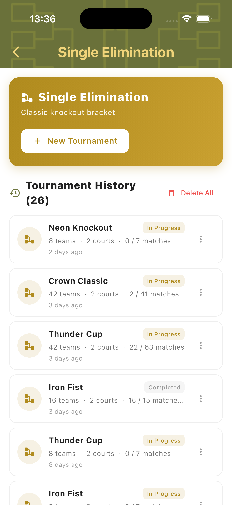
Best for
- Club tournaments, open events, and competitive beach volleyball competitions
- Any event where a clear winner and ranked podium are needed
- Groups of 4 to 42+ teams with multiple courts and a defined time slot
Tournament Setup
Tap New Tournament to open the setup form. Set the number of teams, schedule type, match style, courts, bracket generation method, and how to handle an odd number of teams. The Schedule Preview updates in real time as you adjust settings — showing each round by name, match count, and time slot. Each round's match duration is editable directly from the preview.
Tournament Settings
Configure Teams, Schedule (Soft Schedule), Style (2vs2), Courts, Generation (Random), and Odd Teams handling. The Schedule Preview shows how the bracket maps to time — for 8 teams on 2 courts, a Quarter-final (4 matches), Semi-final (2 matches), and Final (1 match) fit into 1 hour with 15-minute slots. Each round's duration chip is tappable to adjust.
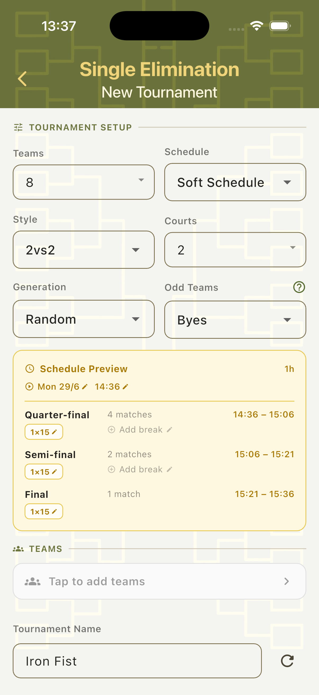
Odd Teams — Byes
When the team count doesn't fill a power-of-two bracket, choose Byes to give some teams a free pass into the next round. For 18 teams this generates a Round 1 (16 matches), Round 2 (8 matches), Quarter-final, Semi-final, and Final — 4 hours total. Teams that receive a bye are not required to play in Round 1.
Odd Teams — Play-in
Choose Play-in to run preliminary matches between only the extra teams, producing winners who join the main bracket. For 18 teams this generates a Play-in round (2 matches) followed by Round 1, Quarter-final, Semi-final, and Final — 2h 15min total. Fewer byes means more competitive matches in the opening round.
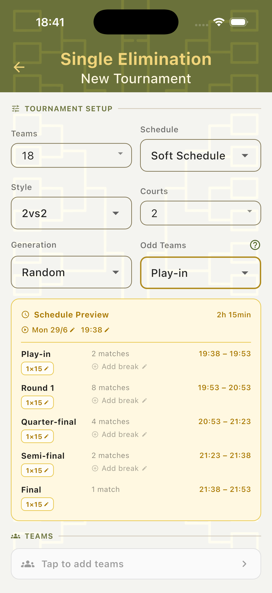
Adding Teams
Tap the Teams field to open the Teams panel. Create teams on the spot, import from the existing teams library, or fill the bracket with random placeholder names. Once all required teams are added, a "Ready to start!" indicator appears and the Create Tournament button activates.
Teams Panel
The Teams bottom sheet shows the current count (e.g. 0/8), three options — Create Team, Add Existing Teams, Fill random — and a list of already-added teams below. The progress counter updates as each team is added.
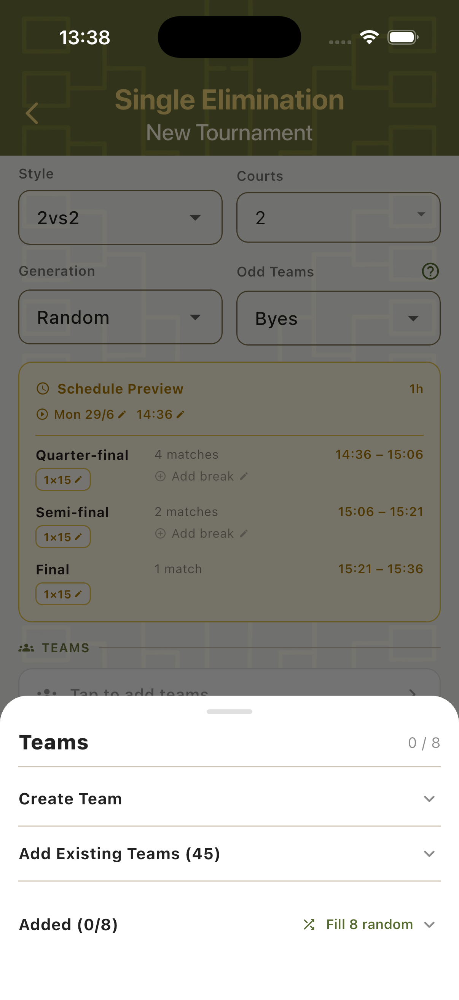
Create a Team
Expand Create Team to enter a team name and up to two player names. Each player field has a search icon to pull an existing player from the Players Hub. Tap Add to save the team to the bracket immediately.
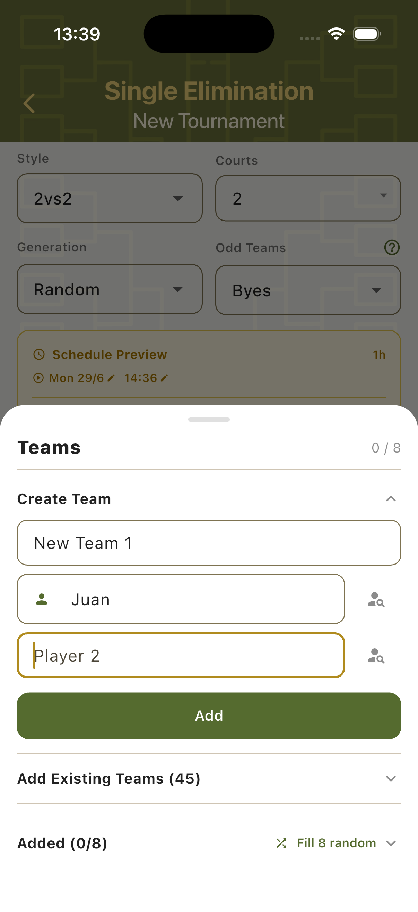
Ready to Start
Once all required teams are added (e.g. 8/8), the Teams field turns green and a "Ready to start!" check appears at the bottom of the setup form. The tournament name field has a re-roll button to generate a random name. Tap Create Tournament to generate the bracket and launch the tournament dashboard.
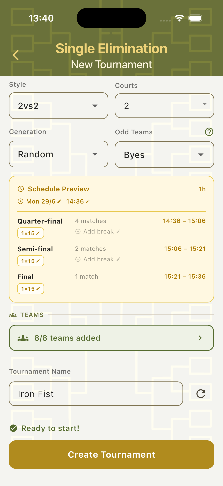
Tournament Dashboard
The tournament overview shows the complete picture: progress percentage, configuration summary, an expandable Schedule Preview, the Teams list with management actions, and the full match schedule grouped by round. Each match entry shows both team names, the assigned court, scheduled time slot, and current status. Teams can be swapped, substituted, or removed at any point during the tournament.
Schedule & Progress
The Overview card shows matches completed and a progress ring (0%–100%). Configuration chips summarise the setup at a glance. The Schedule section lists every match grouped by round — each entry shows team names, court number, time slot, and an "upcoming" or "on time" status. Tap any match to open its scorecard.
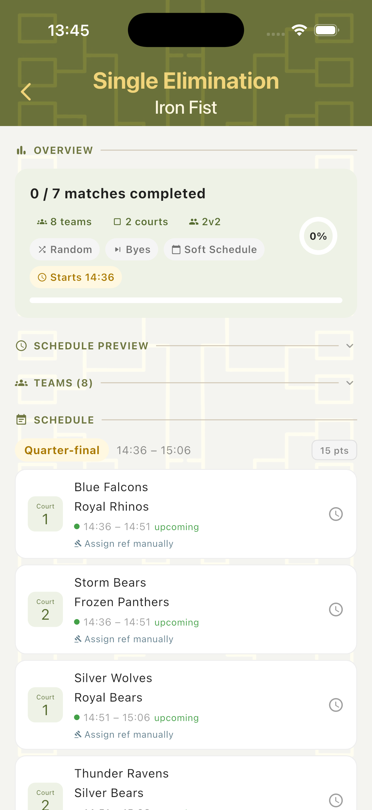
Team Management
Expand the Teams panel to see all registered teams with their player names and current status. Teams can be edited (rename or change players), swapped out (replaced mid-tournament with a substitute team marked "sub in"), or removed. Teams that are eliminated show an "ejected" tag. All changes update the schedule and bracket automatically.
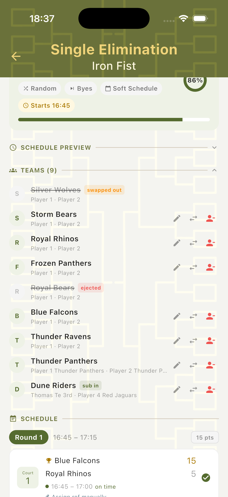
Scorecard
Tap any match in the schedule to open its scorecard. The scorecard shows the round and match context, both teams with player names and current set scores, a serving player indicator, and a live schedule countdown. All match controls — referee suggestion, court, sets, points target, start time, and duration — are visible from a single screen.
Multi-Set Scoring
Set tabs run across the top of the scorecard — completed sets show the final score and winner, the active set is highlighted in gold, and the third set tab activates only if needed. The serving team's card is highlighted in gold; the currently leading team's card turns green. Use the + and − buttons to track each point. Tap Complete Set when a set is won.
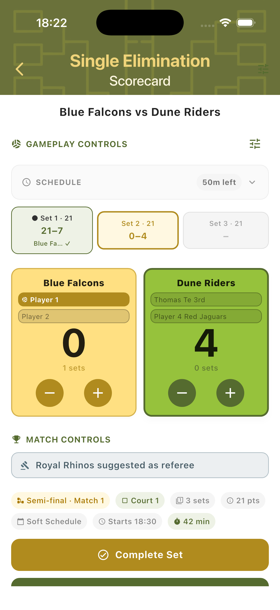
Landscape Mode
Rotate the device to switch to landscape view. Set tabs move to the left column for easy reference. Both team cards appear on the right with large score digits. A schedule panel at the bottom shows the planned start time, actual start (with a delay indicator if running late), estimated end time, and minutes remaining. Useful for placing the device on a net post or table.
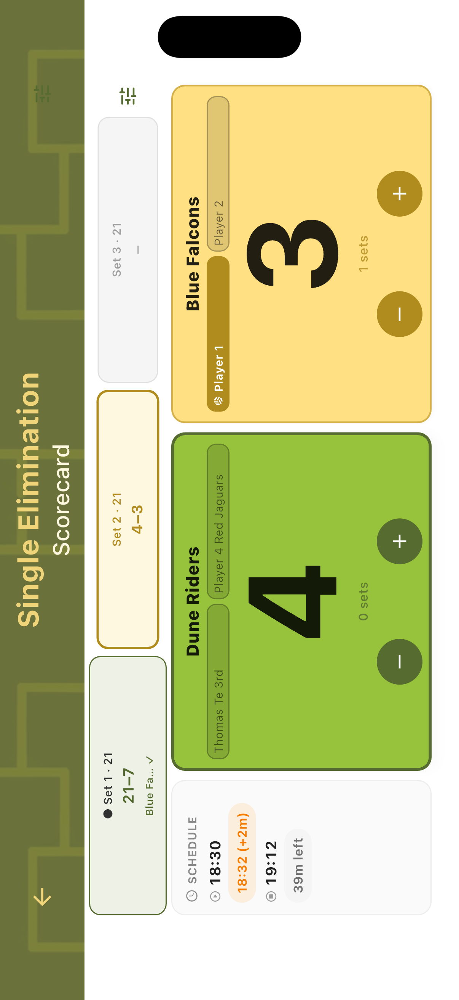
Side Changes
Side changes are automatic. When the combined set score reaches the halfway point — for example a total of 7 in a set to 21 — a Side Change dialog appears over the scorecard. Once teams have physically switched, tap Sides Switched — Continue to resume scoring. The scorecard updates the left/right layout to reflect the new court positions.
Side Change Alert
The Side Change dialog shows the current total score and instructs both teams to switch sides. It appears automatically at the correct score threshold — no manual tracking needed. The Complete Set and Complete Match buttons are visible behind the dialog so the organiser can still act if needed.
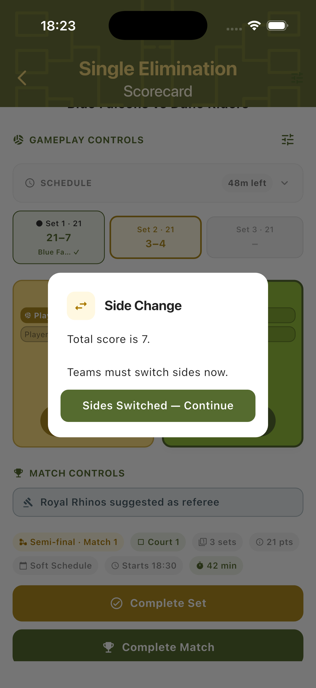
After Side Change
Once confirmed, the scorecard swaps the left and right team positions to match the physical court layout. Scoring continues immediately with no disruption. The active set tab and all set history remain unchanged — the swap only affects the visual layout.
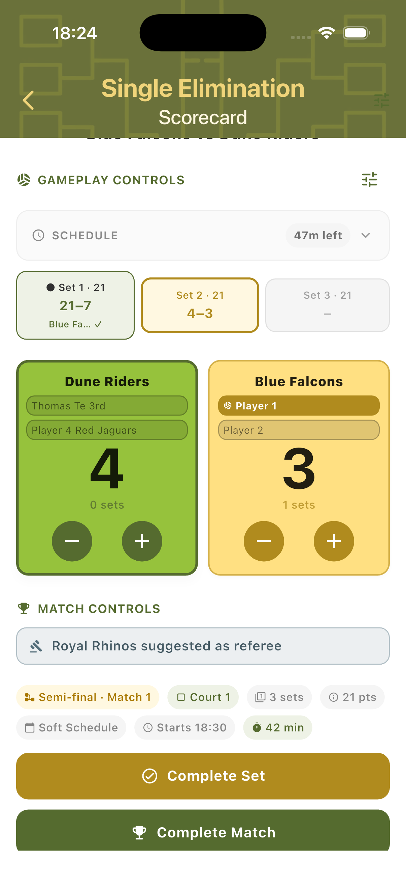
Tournament Results
When all matches are completed, the overview shows 100% progress and a gold podium panel appears at the top of the dashboard. The Tournament Winner, Runner-up, and 3rd place teams are listed with medal icons. The full completed match schedule remains visible below for review.
Podium & Final Standings
The completed tournament overview shows the final results: Tournament Winner (1st), Runner-up (2nd), and 3rd place — which may show two teams if both semi-final losers share the bronze. The progress ring shows 100% and the progress bar is fully green. All completed matches in the schedule show final scores and a checkmark.
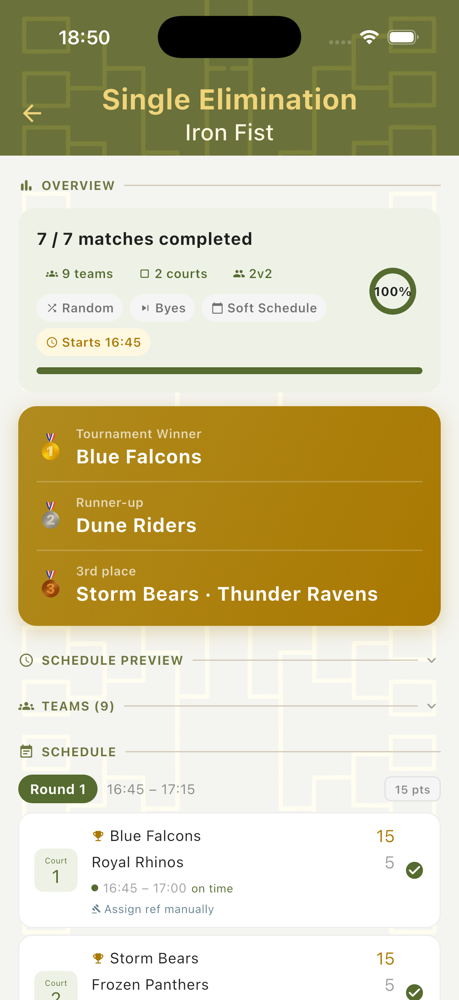
Step-by-Step Workflow
- Open TournaQ and navigate to Single Elimination.
- Tap New Tournament and configure teams, schedule, style, courts, generation, and Odd Teams handling (Byes or Play-in).
- Review the Schedule Preview — adjust per-round match duration by tapping the duration chips if needed.
- Tap the Teams field to open the Teams panel. Add teams by creating new ones, importing from the existing library, or using Fill random.
- Name the tournament and tap Create Tournament once "Ready to start!" appears.
- From the tournament dashboard, tap the first match to open its scorecard.
- Use the + and − buttons to track scores. Confirm side changes when the dialog appears.
- Tap Complete Set after each set. Tap Complete Match to finalise the result and return to the dashboard.
- Continue through all rounds. The schedule updates automatically as results are entered.
- When all matches are completed, review the final podium and standings on the tournament overview.
Have a question about Single Elimination, spotted something missing, or want to suggest an improvement?